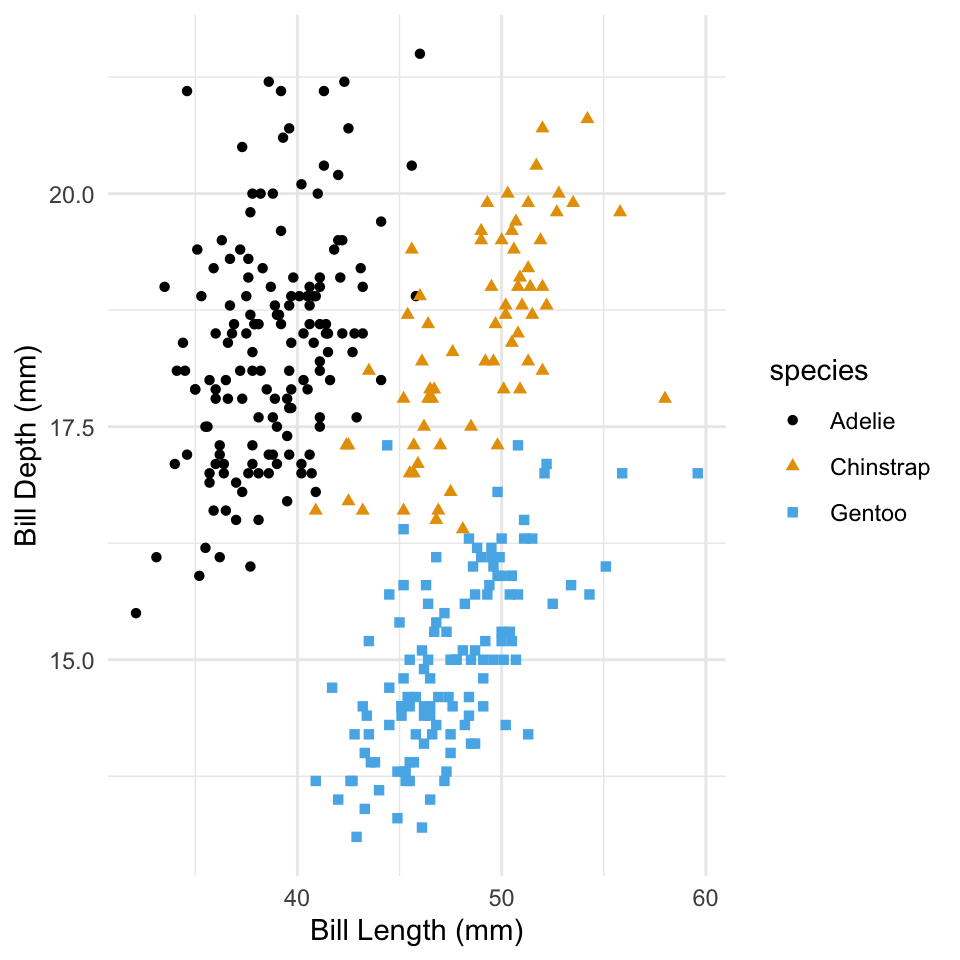

Rows: 344
Columns: 8
$ species <fct> Adelie, Adelie, Adelie, Adelie, Adelie, Adelie, Adel…
$ island <fct> Torgersen, Torgersen, Torgersen, Torgersen, Torgerse…
$ bill_length_mm <dbl> 39.1, 39.5, 40.3, NA, 36.7, 39.3, 38.9, 39.2, 34.1, …
$ bill_depth_mm <dbl> 18.7, 17.4, 18.0, NA, 19.3, 20.6, 17.8, 19.6, 18.1, …
$ flipper_length_mm <int> 181, 186, 195, NA, 193, 190, 181, 195, 193, 190, 186…
$ body_mass_g <int> 3750, 3800, 3250, NA, 3450, 3650, 3625, 4675, 3475, …
$ sex <fct> male, female, female, NA, female, male, female, male…
$ year <int> 2007, 2007, 2007, 2007, 2007, 2007, 2007, 2007, 2007…Intro to Quarto
Data
For this analysis we’ll use the penguins dataset from the palmerpenguins package Gorman et al. (2014).
Species
Below is a bar plot of species of penguins.

Penguins
This table shows the first 10 penguins from the dataset.
| species | island | bill_length_mm | bill_depth_mm |
|---|---|---|---|
| Adelie | Torgersen | 39.1 | 18.7 |
| Adelie | Torgersen | 39.5 | 17.4 |
| Adelie | Torgersen | 40.3 | 18.0 |
| Adelie | Torgersen | NA | NA |
| Adelie | Torgersen | 36.7 | 19.3 |
| Adelie | Torgersen | 39.3 | 20.6 |
| Adelie | Torgersen | 38.9 | 17.8 |
| Adelie | Torgersen | 39.2 | 19.6 |
| Adelie | Torgersen | 34.1 | 18.1 |
| Adelie | Torgersen | 42.0 | 20.2 |
References
To render this document with apa citation style, you also need to download the apa-annotated-bibliography.csl document in this folder and store it in your working director folder for this document.
References
Gorman, K. B., Williams, T. D., & Fraser, W. R. (2014). Ecological Sexual Dimorphism and Environmental Variability within a Community of Antarctic Penguins (Genus Pygoscelis). PLOS ONE, 9(3), e90081. https://doi.org/10.1371/journal.pone.0090081
Publisher: Public Library of Science